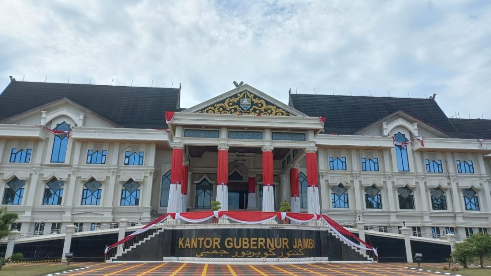
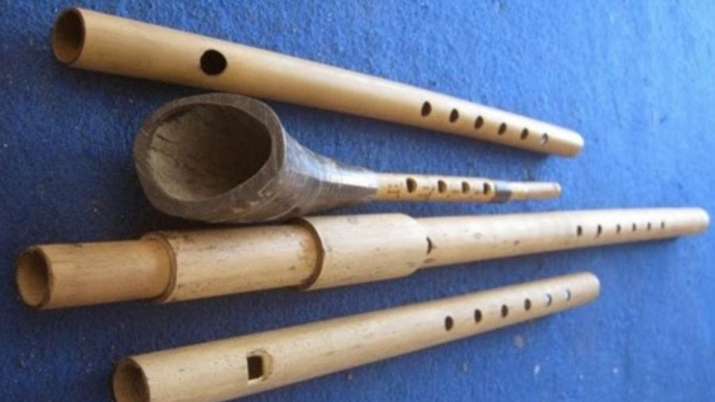
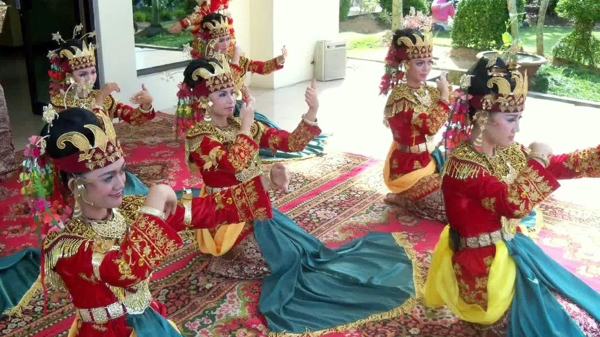
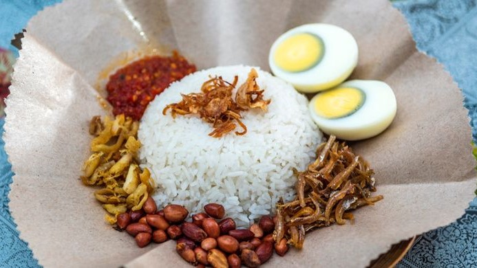

Jambi adalah sebuah provinsi di Indonesia yang terletak di pesisir timur, di bagian tengah pulau Sumatra, ibu kotanya berada di kota Jambi. Provinsi dengan luas wilayah 50.160,05 km2 ini, pada tahun 2021 memiliki jumlah penduduk 3.548.228 jiwa. Provinsi Jambi adalah nama provinsi di Indonesia yang ibu kotanya memiliki nama sama dengan provinsi selain Bengkulu, Daerah Khusus Ibukota Jakarta, Daerah Istimewa Yogyakarta, dan Gorontalo.
Jambi merupakan wilayah yang terkenal dalam literatur kuno. Nama negeri ini, sering disebut dalam prasasti dan juga berita-berita Tiongkok. Ini merupakan bukti bahwa, orang Cina telah lama memiliki hubungan dengan Jambi, yang mereka sebut dengan nama Chan-pei. Diperkirakan, telah berdiri empat kerajaan Melayu Kuno di Jambi, yaitu kerajaan Koying (abad ke-3 M), Tupo (abad ke-3 M), Kantoli (abad ke-5) dan Zabag.

Sejarah
Jambi sebagai daerah pemukiman dan pusat kedudukan pemerintah telah berlangsung dari masa ke masa. Penamaan Jambi dan keberadaan Kota Jambi muncul dalam serangkaian cerita sejarah. Sejarah Dinasti Sung memaparkan bahwa Maharaja San-fo-tsi (Swarnabhumi) berada di Chan-pi. Utusan dari Chan-pi datang untuk pertama kalinya di istana Kaisar China pada tahun 853 M. Kemudian, utusan kedua datang pada 871 M. Informasi tersebut menandakan bahwa Chan-pi (yang diidentifikasikan oleh pakar sebagai Jambi) sudah muncul di berita China pada tahun-tahun tersebut. Sehingga, Chan-pi atau Jambi telah ada dan dikenal pda abad 9 M. Berita China Ling Pio Lui (890-905 M) juga menyebutkan bahwa Chan-pi (Jambi) mengirim misi dagang ke China.
Kata Jambi juga berasal dari Jambe yang merupakan sebutan pinang dalam bahasa Jawa (Sunda). Banyak orang memperkirakan bahwa kata tersebut merupakan asal-usul kata Jambi. Dengan, adanya perubahan bunyi dan huruf dari Jambe ke Jambi. Identifikasi ini menginformasikan kata Jambe ke Jambi pada abad 15, semasa Kerajaan Jambi di perintahkan Puteri Selaro Pinang Masak pada 1460-1480.
Budaya
Jambi merupakan sebuah provinsi yang terletak di timur pulau Sumatera. Masyarakat Jambi terdiri dari beberapa macam suku pribumi seperti Suku Jambi, Suku Kerinci, Suku Batin, Suku Anak Dalam, hingga keturunan atau rumpun Minang. Tak heran jika provinsi ini mempunyai berbagai macam tradisi dan budaya.
Musik

Musik Jambi banyak dipengaruhi oleh nuansa Melayu dan Arab, diantaranya adalah alat musik tradisional, seperti Gambus Jambi, Gendang Melayu, Sekdu, Kompangan, Marawis, Cangor dan Kelintang Jolo. Sedangkan untuk lagu daerah Jambi, diantaranya adalah Injit-Injit Semut, Pinang Muda, Selendang Mayang, dan Batanghari
Tari

Secara garis besar seni tari dari provinsi Jambi adalah dari adat budaya etnis Melayu dan Kerinci. Terdapat beberapa macam jenis tari tradisional khas Jambi, di antaranya tari Sekapur Sirih, Selampit Delapan, Inai, Rentak Kudo, Mengaup dan Rentak Besapih.
Makanan

Masakan Jambi atau Hidangan Jambi adalah makanan khas Jambi atau jenis kuliner yang berkembang di provinsi Jambi, Indonesia. Masakan ini banyak berbahan dasar ikan yang didukung oleh banyaknnya sungai di provinsi Jambi. Rempah-rempah juga pada umumnya tidak jauh berbeda dengan Masakan Sumatera Barat. Budaya Melayu, dan Minangkabau juga mempengaruhi racikan kuliner provinsi Jambi. Beberapa contoh makanan dari Jambi yang cukup populer adalah Nasi gemuk, Tempoyak, Kerutup ikan, Daging masak hitam, Gulai tepek ikan, Gulai terjun, dan Gulai tekuyung.
Wisata
Jambi adalah salah satu daerah yang jadi penyumbang keelokan Indonesia. Bukan hanya alamnya yang eksotis, provinsi yang memiliki sejarah panjang ini juga memiliki banyak peninggalan historis di tanahnya. Berikut beberapa wisata yang ada di Provinsi Jambi :

Tugu Keris Siginjai adalah sebuah tugu atau monumen yang merupakan ikon dari Kota Jambi. Bentuknya menyerupai keris siginjai yakni keris kerajaan Jambi. Tugu ini memiliki tinggi sekitar 9 meter dan tinggi keseluruhannya sekitar 28 meter. Letaknya tepat berada dipusat perkantoran Wali Kota Jambi, Kota Baru.

Dengan air sebening kaca dan tanaman hijau di sekelilingnya, Danau Kaco menawarkan atmosfer yang menenangkan. Perjalanan menuju danau ini memang cukup menantang, tapi lelahmu akan terbayarkan dengan perasaan rileks ketika kamu mencapai danau.

Candi Muaro Jambi adalah sebuah kompleks percandian agama Hindu-Buddha terluas di asia tenggara, dengan luas 3981 hektar. yang kemungkinan besar merupakan peninggalan Kerajaan Sriwijaya dan Kerajaan Melayu.

Gunung Kerinci adalah gunung tertinggi di pulau Sumatra dan gunung berapi tertinggi di Indonesia. Gunung Kerinci terletak di perbatasan Kabupaten Kerinci, Jambi dan Kabupaten Solok Selatan, Sumatra Barat, di Pegunungan Bukit Barisan dengan ketinggian 3.805 mdpl.